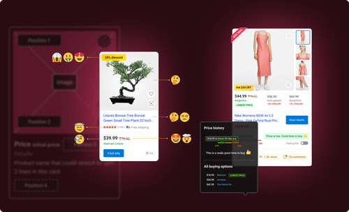
The Shopping team had been using decorators for more than 3 years but there was never an established vocabulary or a system around using or creating decorators.
Creating a new decorator whenever there was a requirement was always a siloed exercise . The Shopping segment was growing fast and we were getting new data around deals and offers constantly.
I got the idea of working on an action-oriented framework when I was working on a new decorator.
I worked as the only designer on this project with 1 PM and a team of 2 front-end developers in early 2021. This case study showcases the work of around 4 weeks.
I wanted to create a shared vocabulary & a framework around decorators that could be used by the entire Shopping team going forward. This became one of the most appreciated and visible projects I had worked on.
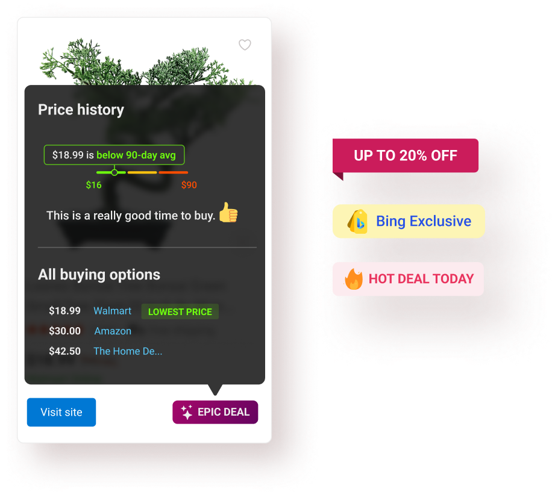
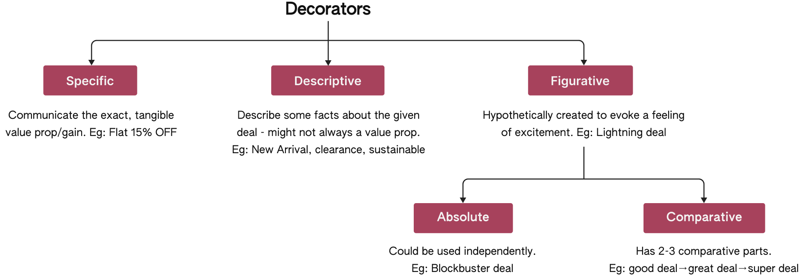
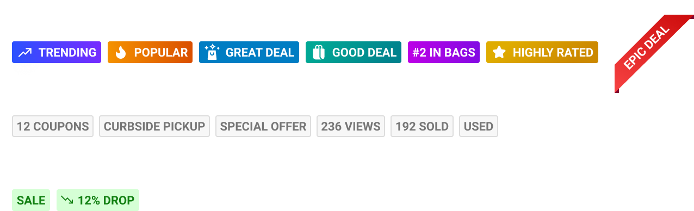
The Shopping team used to refer to the small deal badges on product cards as shopping/deal ‘decorators’ (as shown in the given image).
This project began as a self-initiated exercise but quickly gained a lot of traction as the team showed interest in getting this to production. I worked on creating a framework to create and categorize decorators, diverge to explore a lot of visual design ideas, and focused on an implementation-first design system MVP for decorators that the team can work on right away.
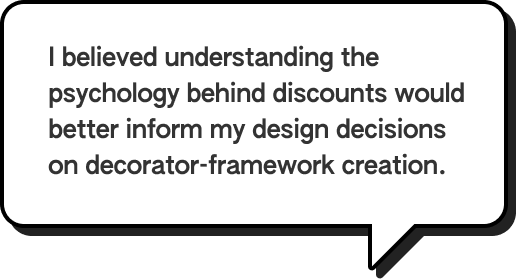
Since the project wasn’t very defined and kind of experimental, I did not have something concrete to go and talk about to the users. I turned to the already established and elaborate research that’s available around deals and discounts to understand how a buyer feels while going through the cycle of shopping and using discounts.
People are happier & more relaxed (less stressed) when they feel they’re able to save more while shopping.
In a study, people who received a $10 voucher showed:
• 38% rise in oxytocin levels;
• 11% more happiness than the ones who didn’t get the voucher;
• respiration rate drops 32%;
• sweat levels 20 times lower than their peers;
The above study holds true for different generations as well.
(Dr. Paul J. Zak via “Your Brain on Coupons”)
Today’s consumer want to feel as if they have spent money in the smartest way possible & leveraging deals helps them do so.
(Inc.com)
Anticipation of missing out on a discount is definitely a pain people want to avoid.
(ReflexSigns)
Consumer perceive certain numbers and words more appealing than other. Hence, perception is what deals and discounts should be designed for.(Eg: Get $X OFF is perceived better than Save $X)
(Julia Krzak@Voucherify)
Consumers focus on price more after discovering a discount and it doesn’t work out well for luxury brands. Also, too many/too often discounts are detrimental for the brands’ perceived value.
(YoastSEO)
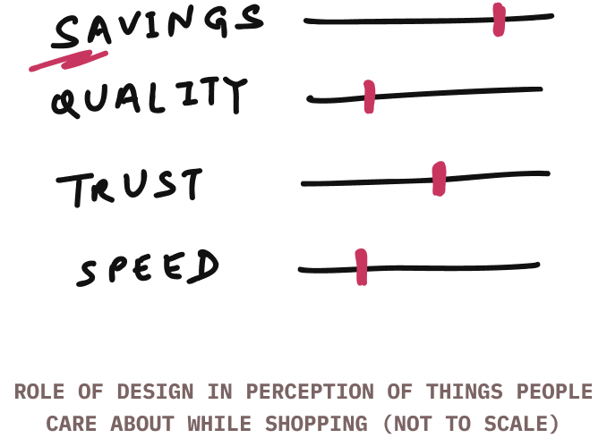
Consumers care about a lot of things while shopping online such as savings, quality of the product, trust in the provider/seller, speed of process/logistics, etc. Based on my experience of working with Microsoft Shopping for a few years at this time, I knew the impact of design was profound on the perception of savings for any product during online shopping. It relates back directly to, you guessed it right, decorators!
In e-commerce, the seemingly small decorators play a vital role in influencing consumer behavior and conversion. Decorators are THE way for brands and platforms to communicate the value of a discount or product to the users. Hence, most of the psychological aspects related to deals and discounts can be leveraged to design better decorators for shopping experiences.
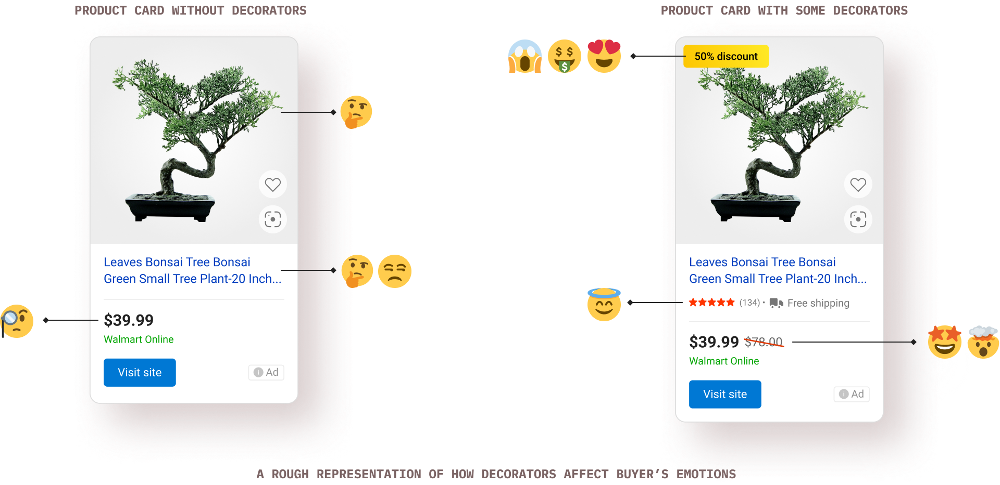
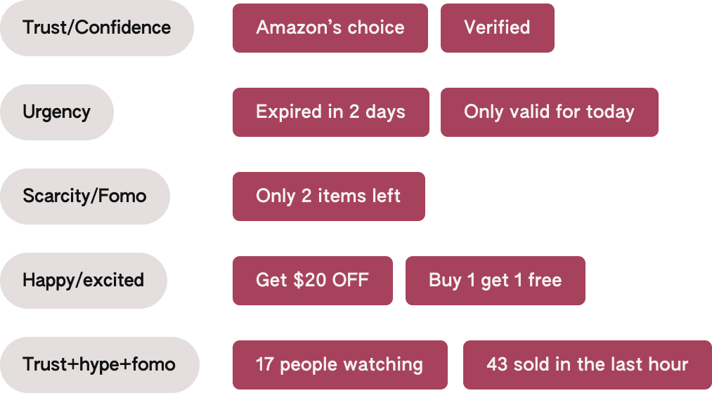
Deals and promotions affect every part of the shopping experience (from starting research to final checkout). Shopping, both online & offline, can’t be imagined today without deals and discounts. Here are some of the many interesting datapoints (nothing surprising though) establishing the same (Source: RetailmeNot & Statista):
Americans shop with coupons
users feel more encouraged to purchase from a brand with a discount
users purchased an unplanned item based solely on getting a discount
coupons were estimated to be redeemed by 2019
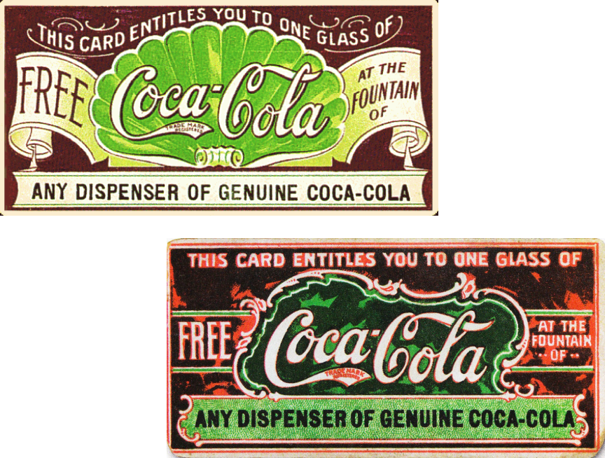
In 1887, Coca-Cola distributed the first ever coupon, which, the recipients could use to get one free glass of Coke at any dispensary. Between 1894 and 1913, approximately 1/9 Americans had received a free Coke (8.5 million free drinks). By 1895, Coca Cola was being served in every state. (Source: Coupon Sherpa)
When I look at these coupons (and many others after this - to even today) they remind of a intricately designed artifacts, designed to be unique & novel with inherent value (just like currency notes). This could help make consumers feel exclusive and convert them into brand-loyal customers.
Design languages might have changed over the years but the celebratory aspect of coupons and deals lives on till date.
We all might’ve seen the loud (often bright red) discount posters/flyers at least once while shopping in stores.
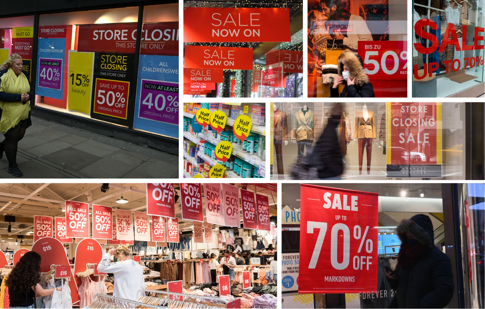
I’ve seen decorators in online shopping platforms for as long as I can remember. The same intensity, boldness, and loud nature of a real world discount flyer could be seen translated into the world of e-commerce. From a system’s perspective, both online and offline discount communication have some effect on each other and hence they (online and offline decorator treatment) are more or less coherent.
I studied and analyzed decorators from different platforms and geographies and used that data as a foundation to my decorator framework.
The segregation below is done on the basis of decorator density and their relation to market geographies
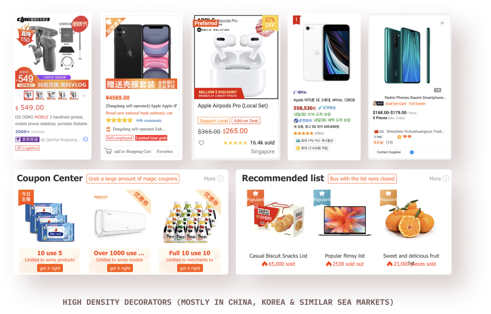
Asian markets (such as China, Korea, Taiwan, Philippines, Singapore, etc.) are known for their high density shopping experiences characterized by bold and loud design.
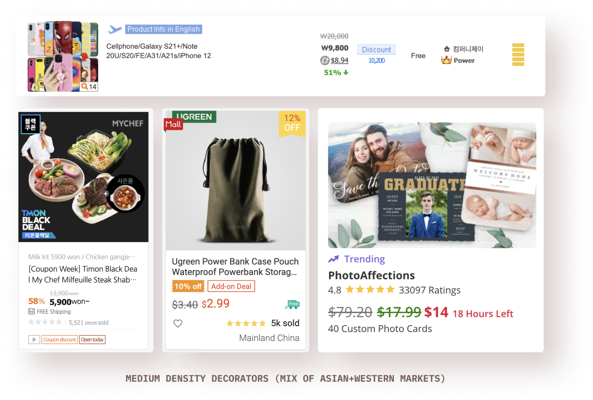
A few players in the Western markets have adopted the mid-high density approach (such as Wish.com and western counterparts of Asian platforms).
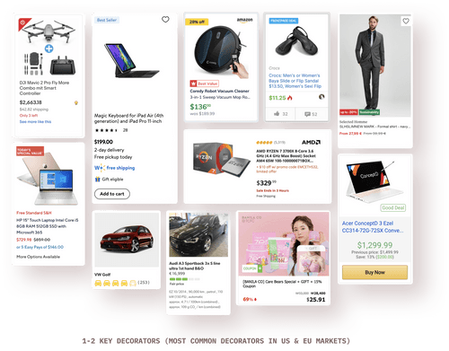
Usual run of the mill product cards (mostly seen in US/EU based markets) with clear focus on 1-2 decorators.
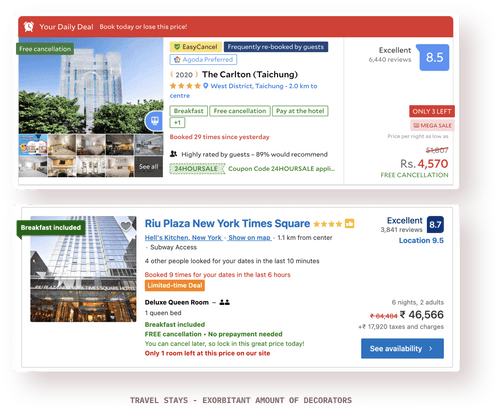
The travel segment (especially hotels & stays) takes the cake for the most no. of decorators in any segment (as far as I know), sometimes even reaching 12-15 or more in a single product card.
Where did we (Bing Shopping) stand in this eco-system?
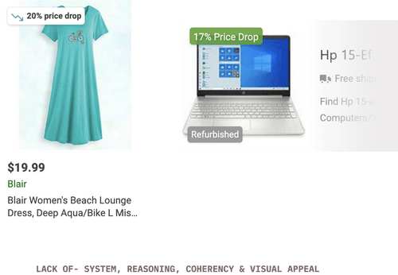
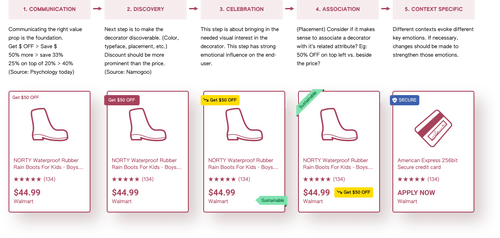
It's in the name - ‘decorator’. The very premise is celebration & delight.
The decorators should reflect the context’s emotion.
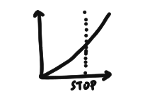
Too much celebration is worse than no celebration.
After defining the frameworks & design directions, I explored a lot of options in terms of both data and visual design to give the team a glimpse of what the vision of decorators could possibly look like.
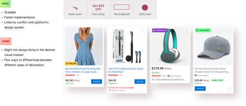
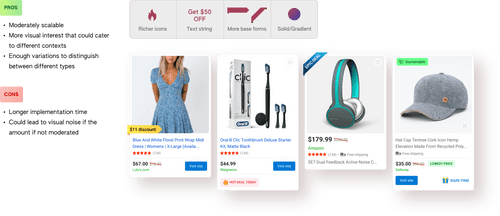
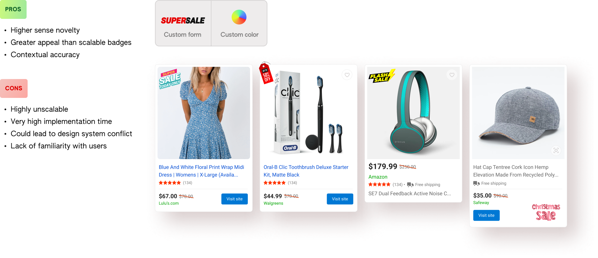
Helpful in establishing brand recognition, trustworthiness & recall on other surfaces.
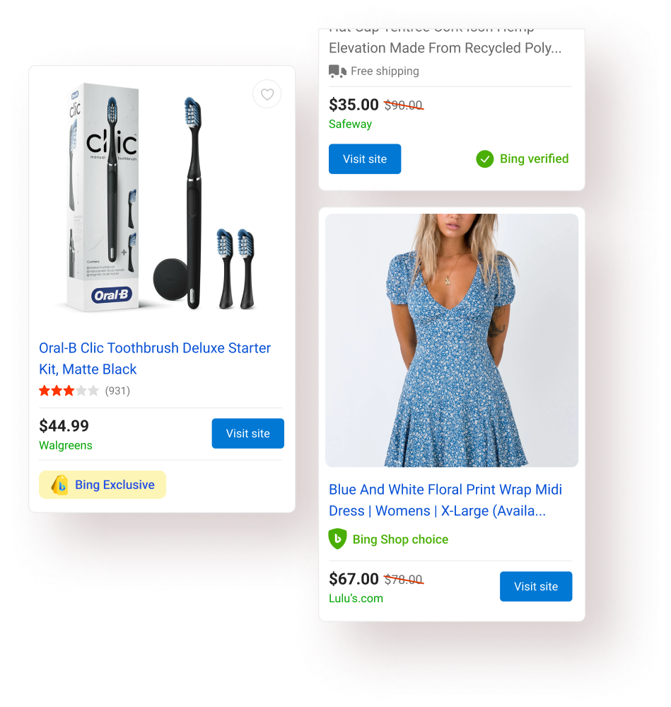
Connecting with users through informal & relatable language. Added advantage is SEO optimization and requer-ying.
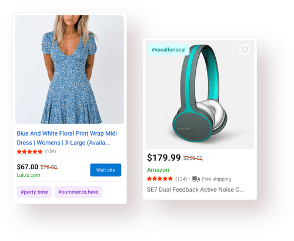
Useful to make some deals stand out from the others and help users navigate easily.
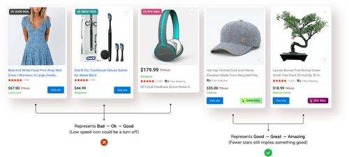
The idea is to show a quick view of not only the product, but also why a deal is Great or Epic.
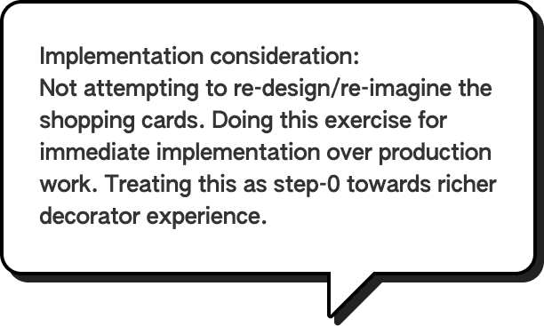
After working on the design explorations and vision for decorators I had proposed, the team was onboard to take this into production as soon as possible. This is where a tactical MVP was needed that could be deployed and tested quickly to see the overall business impact and to get some much needed user feedback. What made this a bit more challenging was the fact that Bing Shopping didn’t have a brand identity and hence there was little/no established background for me to base my decisions on.
I started by listing down the key objectives I wanted to achieve with the MVP. Also shared these objectives with the team so that everyone is on the same page regarding what we were doing and why we were doing it.
Addition of new decorators categorized based on the above proposed framework.
Although consistency isn’t an alternative of brand identity, it’s good to have with certain rules in place for MVP implementation.
[Based on data] Ensuring decorators work across all image types and add appropriate visual interest in the cards.
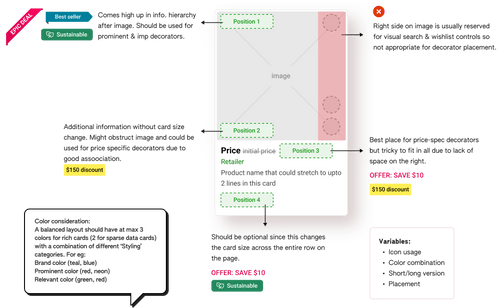
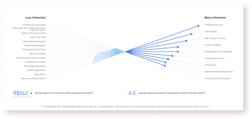
I started by listing down the key objectives I wanted to achieve with the MVP. Also shared these objectives with the team so that everyone is on the same page regarding what we were doing and why we were doing it.
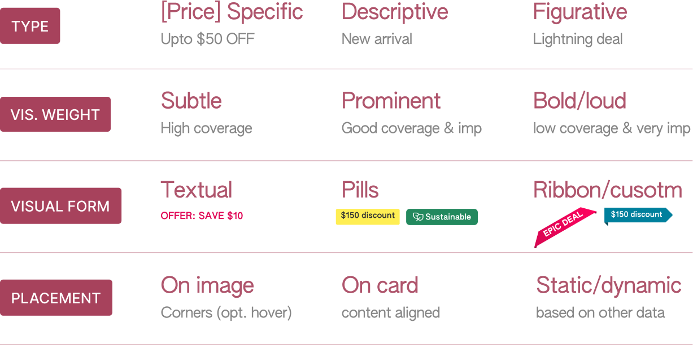
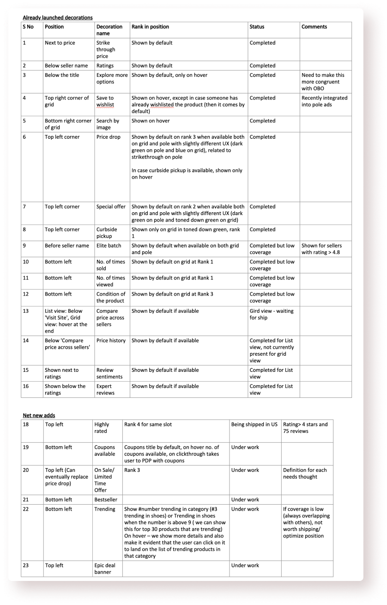
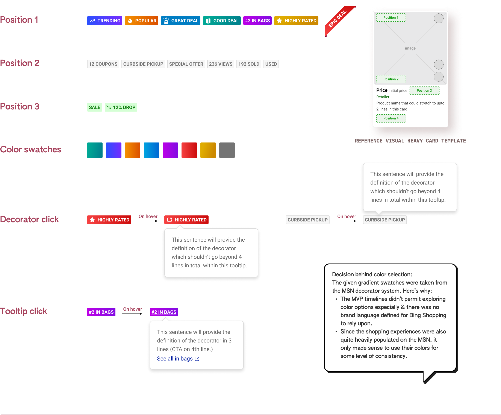
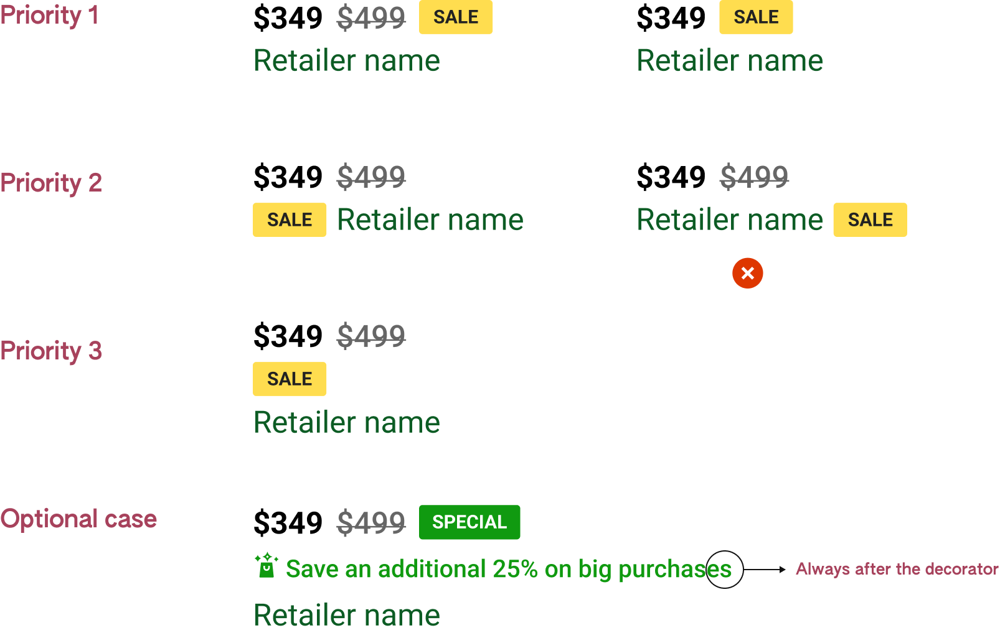
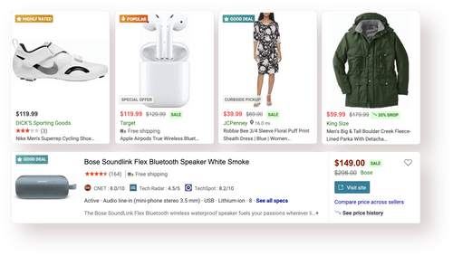
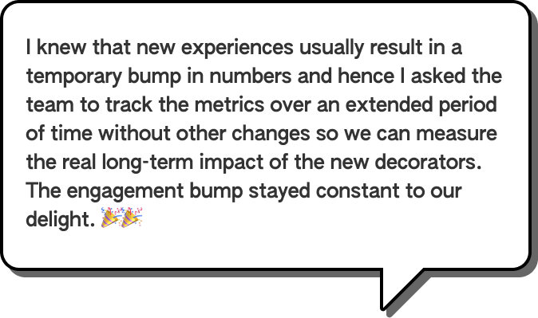
The new MVP decorators immediately started fetching a very substantial increase in engagement on the product cards shown in Bing Shopping vertical.
consistent engagement increase on product cards.
reached out to me for help in translating my framework for their contexts. The project was a massive success and was recognized across the org.
Shopping decorators are modular and it’s hard to design them for multiple touch-points and products. Also, the frequency of new decorator creation is reducing and hence coming up with a framework that’d stand the test of time was challenging.
The user feedback on the priority of decorators was a mixed bag. There was some published secondary data around the ranking of decorators from Google. And then there were some internal team biases as well. Making sense of all these and coming up with a system for the same was hard.
It’d be safe to say that (online) commerce doesn’t exist without the use of decorators. Microsoft alone has numerous Shopping subsidiaries, each having its own design language and decorator design. So collaborating with teams on implementing the decorators required a lot of back and forth discussions.
Bing Shopping didn’t have a brand identity that I could use to base my design decisions on. Decorator design is very brand-specific and having no brand-language made me look for alternatives. I ended up choosing (and slightly changing) my partner team’s design language for the MVP.
Although I didn’t envision this project to get multi-team visibility, it’d have been immensely helpful if I had talked to other teams to learn about their decorator usage and rationales.
As mentioned earlier, not having a brand identity made me adopt a partner team’s design language. I could’ve spent more time defining small bits of the design language, which could’ve acted as building blocks for the larger brand identity.
If I had more time, I’d have liked to design a user-study that’d help me evaluate proper ranking of decorators on the Bing Shopping (and equivalent) platforms.
Although my framework was elaborate and detailed for the time I spent on it, it’d have been more fun creating a detailed playbook around creation, usage, effects, etc. of decorators.